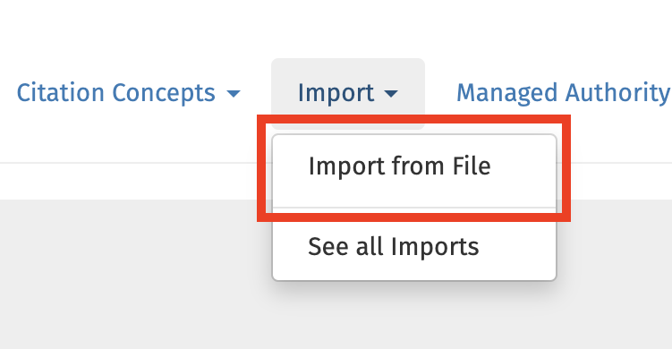
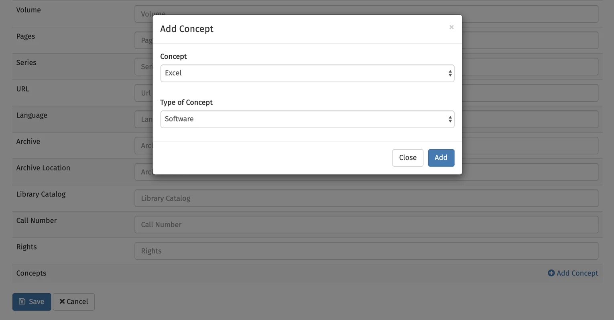
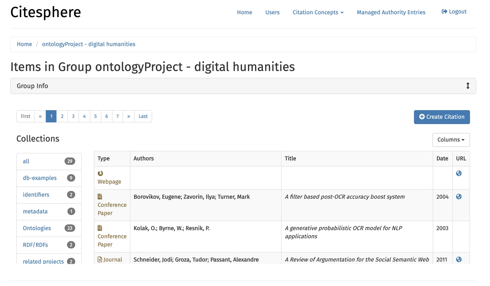

<div class='full'>
	<div class='row'>
		<div class='container'> 
            <div style="text-align: center;">
                <h2>Manage your citations and more.</h2>
                <p>Citesphere is a web application that can link to Zotero and allows you to manage your Zotero citations. You can add additional information to the citations that Zotero doesn't support such as specifying author affiliations or author URIs.</p>
                <a href="https://chps.asu.edu/citesphere" target="_blank"><button class="secondary-btn">Get started</button></a>
            </div>            

            <div class="flex-spacing" style="margin-top: 100px">
                
                <div style="margin-left: 40px">
                    <h3>Import references in bulk</h3>
                    <p>You can bulk import two types of reference files: JSTOR XML metadata format and Web of Science plain text exports either as columns (tab-delimited) or list of records (plain text).</p>
                </div>
            </div>

            <div class="flex-spacing" style="margin-top: 100px">
                <div style="margin-right: 40px">
                    <h3>Add concepts to references.</h3>
                    <p>You can use this feature to, for example, add concepts that are being discussed in a paper, methods that are being used, place that are of importance, etc.</p>
                </div>
                
            </div>

            <div class="flex-spacing" style="margin-top: 100px">
                
                <div style="margin-left: 40px">
                    <h3>Sync your Zotero citations.</h3>
                    <p>If you have a way of importing references into Zotero, you can use your local Zotero client to collect references. Make sure that the references that you want to manage in Citesphere are in a Zotero group (the group does not have to be shared) and that the group is synced.</p>
                </div>
            </div>
        </div>
    </div>
</div>
